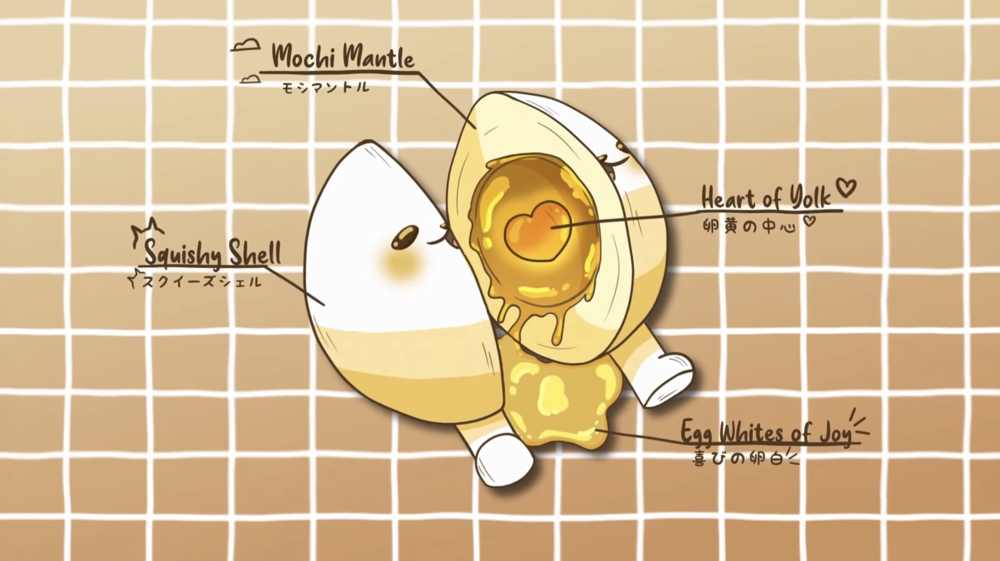

An eggdog is a breed of dog that have the general shape of an egg, the structural apsects of them become also very interesting as an egg is made to withstand the pressure that a chicken sitting on it would exerce. This spcecie also has alot of interesting changes made to it's body.

Copyright © reserved weebified. All rights reserved